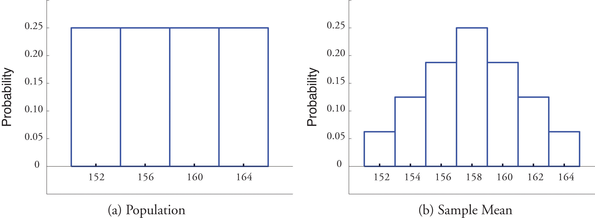
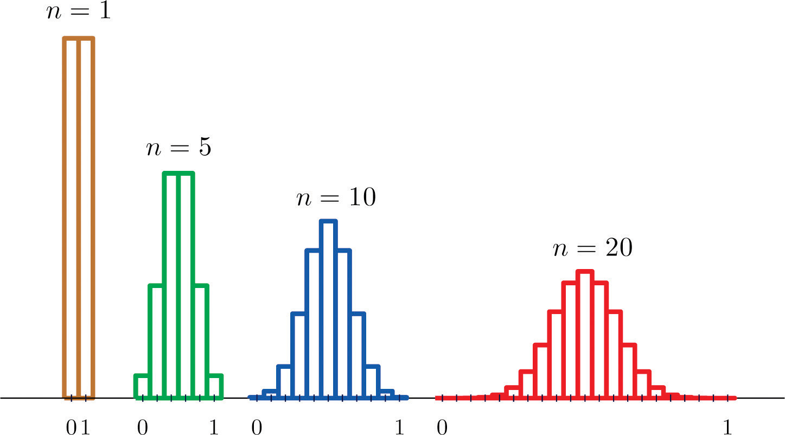
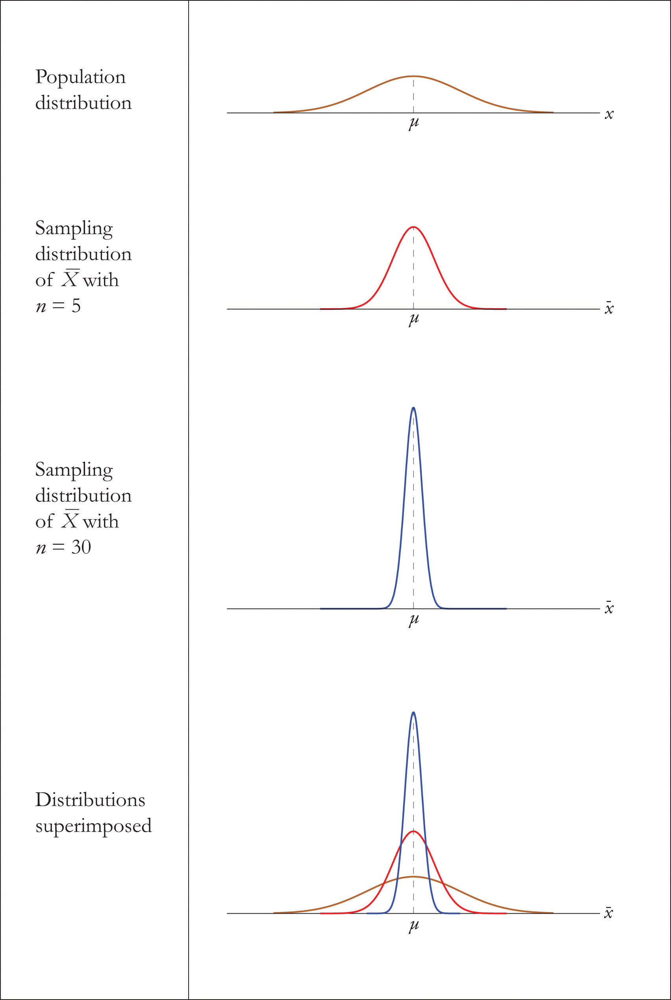
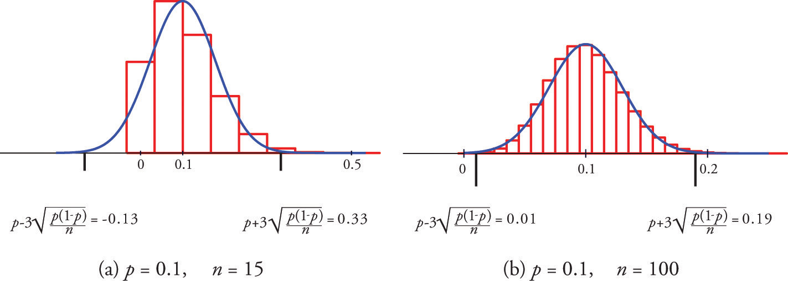
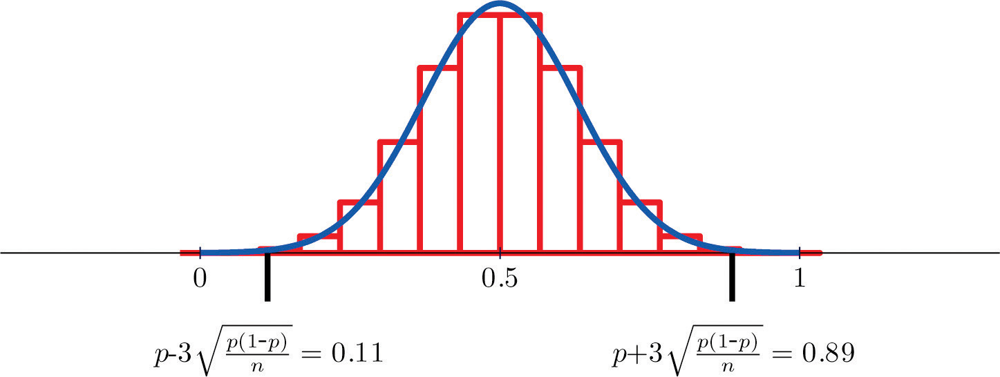

A statistic, such as the sample mean or the sample standard deviation, is a number computed from a sample. Since a sample is random, every statistic is a random variable: it varies from sample to sample in a way that cannot be predicted with certainty. As a random variable it has a mean, a standard deviation, and a probability distribution. The probability distribution of a statistic is called its sampling distributionThe probability distribution of a sample statistic when the statistic is viewed as a random variable.. Typically sample statistics are not ends in themselves, but are computed in order to estimate the corresponding population parameters, as illustrated in the grand picture of statistics presented in Figure 1.1 "The Grand Picture of Statistics" in Chapter 1 "Introduction".
This chapter introduces the concepts of the mean, the standard deviation, and the sampling distribution of a sample statistic, with an emphasis on the sample mean
Suppose we wish to estimate the mean μ of a population. In actual practice we would typically take just one sample. Imagine however that we take sample after sample, all of the same size n, and compute the sample mean of each one. We will likely get a different value of each time. The sample mean is a random variable: it varies from sample to sample in a way that cannot be predicted with certainty. We will write when the sample mean is thought of as a random variable, and write for the values that it takes. The random variable has a meanThe number about which means computed from samples of the same size center., denoted , and a standard deviationA measure of the variability of means computed from samples of the same size., denoted Here is an example with such a small population and small sample size that we can actually write down every single sample.
A rowing team consists of four rowers who weigh 152, 156, 160, and 164 pounds. Find all possible random samples with replacement of size two and compute the sample mean for each one. Use them to find the probability distribution, the mean, and the standard deviation of the sample mean
Solution
The following table shows all possible samples with replacement of size two, along with the mean of each:
| Sample | Mean | Sample | Mean | Sample | Mean | Sample | Mean | |||
|---|---|---|---|---|---|---|---|---|---|---|
| 152, 152 | 152 | 156, 152 | 154 | 160, 152 | 156 | 164, 152 | 158 | |||
| 152, 156 | 154 | 156, 156 | 156 | 160, 156 | 158 | 164, 156 | 160 | |||
| 152, 160 | 156 | 156, 160 | 158 | 160, 160 | 160 | 164, 160 | 162 | |||
| 152, 164 | 158 | 156, 164 | 160 | 160, 164 | 162 | 164, 164 | 164 |
The table shows that there are seven possible values of the sample mean The value happens only one way (the rower weighing 152 pounds must be selected both times), as does the value , but the other values happen more than one way, hence are more likely to be observed than 152 and 164 are. Since the 16 samples are equally likely, we obtain the probability distribution of the sample mean just by counting:
Now we apply the formulas from Section 4.2.2 "The Mean and Standard Deviation of a Discrete Random Variable" in Chapter 4 "Discrete Random Variables" for the mean and standard deviation of a discrete random variable to For we obtain.
For we first compute :
which is 24,974, so that
The mean and standard deviation of the population {152,156,160,164} in the example are μ = 158 and The mean of the sample mean that we have just computed is exactly the mean of the population. The standard deviation of the sample mean that we have just computed is the standard deviation of the population divided by the square root of the sample size: These relationships are not coincidences, but are illustrations of the following formulas.
Suppose random samples of size n are drawn from a population with mean μ and standard deviation σ. The mean and standard deviation of the sample mean satisfy
The first formula says that if we could take every possible sample from the population and compute the corresponding sample mean, then those numbers would center at the number we wish to estimate, the population mean μ.
The second formula says that averages computed from samples vary less than individual measurements on the population do, and quantifies the relationship.
The mean and standard deviation of the tax value of all vehicles registered in a certain state are and Suppose random samples of size 100 are drawn from the population of vehicles. What are the mean and standard deviation of the sample mean ?
Solution
Since n = 100, the formulas yield
Random samples of size 225 are drawn from a population with mean 100 and standard deviation 20. Find the mean and standard deviation of the sample mean.
Random samples of size 64 are drawn from a population with mean 32 and standard deviation 5. Find the mean and standard deviation of the sample mean.
A population has mean 75 and standard deviation 12.
A population has mean 5.75 and standard deviation 1.02.
,
In Note 6.5 "Example 1" in Section 6.1 "The Mean and Standard Deviation of the Sample Mean" we constructed the probability distribution of the sample mean for samples of size two drawn from the population of four rowers. The probability distribution is:
Figure 6.1 "Distribution of a Population and a Sample Mean" shows a side-by-side comparison of a histogram for the original population and a histogram for this distribution. Whereas the distribution of the population is uniform, the sampling distribution of the mean has a shape approaching the shape of the familiar bell curve. This phenomenon of the sampling distribution of the mean taking on a bell shape even though the population distribution is not bell-shaped happens in general. Here is a somewhat more realistic example.
Figure 6.1 Distribution of a Population and a Sample Mean
Suppose we take samples of size 1, 5, 10, or 20 from a population that consists entirely of the numbers 0 and 1, half the population 0, half 1, so that the population mean is 0.5. The sampling distributions are:
n = 1:
n = 5:
n = 10:
n = 20:
Histograms illustrating these distributions are shown in Figure 6.2 "Distributions of the Sample Mean".
Figure 6.2 Distributions of the Sample Mean
As n increases the sampling distribution of evolves in an interesting way: the probabilities on the lower and the upper ends shrink and the probabilities in the middle become larger in relation to them. If we were to continue to increase n then the shape of the sampling distribution would become smoother and more bell-shaped.
What we are seeing in these examples does not depend on the particular population distributions involved. In general, one may start with any distribution and the sampling distribution of the sample mean will increasingly resemble the bell-shaped normal curve as the sample size increases. This is the content of the Central Limit Theorem.
For samples of size 30 or more, the sample mean is approximately normally distributed, with mean and standard deviation , where n is the sample size. The larger the sample size, the better the approximation.
The Central Limit Theorem is illustrated for several common population distributions in Figure 6.3 "Distribution of Populations and Sample Means".
Figure 6.3 Distribution of Populations and Sample Means

The dashed vertical lines in the figures locate the population mean. Regardless of the distribution of the population, as the sample size is increased the shape of the sampling distribution of the sample mean becomes increasingly bell-shaped, centered on the population mean. Typically by the time the sample size is 30 the distribution of the sample mean is practically the same as a normal distribution.
The importance of the Central Limit Theorem is that it allows us to make probability statements about the sample mean, specifically in relation to its value in comparison to the population mean, as we will see in the examples. But to use the result properly we must first realize that there are two separate random variables (and therefore two probability distributions) at play:
Let be the mean of a random sample of size 50 drawn from a population with mean 112 and standard deviation 40.
Solution
By the formulas in the previous section
Since the sample size is at least 30, the Central Limit Theorem applies: is approximately normally distributed. We compute probabilities using Figure 12.2 "Cumulative Normal Probability" in the usual way, just being careful to use and not σ when we standardize:
Similarly
Note that if in Note 6.11 "Example 3" we had been asked to compute the probability that the value of a single randomly selected element of the population exceeds 113, that is, to compute the number P(X > 113), we would not have been able to do so, since we do not know the distribution of X, but only that its mean is 112 and its standard deviation is 40. By contrast we could compute even without complete knowledge of the distribution of X because the Central Limit Theorem guarantees that is approximately normal.
The numerical population of grade point averages at a college has mean 2.61 and standard deviation 0.5. If a random sample of size 100 is taken from the population, what is the probability that the sample mean will be between 2.51 and 2.71?
Solution
The sample mean has mean and standard deviation , so
The Central Limit Theorem says that no matter what the distribution of the population is, as long as the sample is “large,” meaning of size 30 or more, the sample mean is approximately normally distributed. If the population is normal to begin with then the sample mean also has a normal distribution, regardless of the sample size.
For samples of any size drawn from a normally distributed population, the sample mean is normally distributed, with mean and standard deviation , where n is the sample size.
The effect of increasing the sample size is shown in Figure 6.4 "Distribution of Sample Means for a Normal Population".
Figure 6.4 Distribution of Sample Means for a Normal Population
A prototype automotive tire has a design life of 38,500 miles with a standard deviation of 2,500 miles. Five such tires are manufactured and tested. On the assumption that the actual population mean is 38,500 miles and the actual population standard deviation is 2,500 miles, find the probability that the sample mean will be less than 36,000 miles. Assume that the distribution of lifetimes of such tires is normal.
Solution
For simplicity we use units of thousands of miles. Then the sample mean has mean and standard deviation Since the population is normally distributed, so is , hence
That is, if the tires perform as designed, there is only about a 1.25% chance that the average of a sample of this size would be so low.
An automobile battery manufacturer claims that its midgrade battery has a mean life of 50 months with a standard deviation of 6 months. Suppose the distribution of battery lives of this particular brand is approximately normal.
Solution
Since the population is known to have a normal distribution
The sample mean has mean and standard deviation Thus
A population has mean 128 and standard deviation 22.
A population has mean 1,542 and standard deviation 246.
A population has mean 73.5 and standard deviation 2.5.
A population has mean 48.4 and standard deviation 6.3.
A normally distributed population has mean 25.6 and standard deviation 3.3.
A normally distributed population has mean 57.7 and standard deviation 12.1.
A population has mean 557 and standard deviation 35.
A population has mean 16 and standard deviation 1.7.
A normally distributed population has mean 1,214 and standard deviation 122.
A normally distributed population has mean 57,800 and standard deviation 750.
A population has mean 72 and standard deviation 6.
A population has mean 12 and standard deviation 1.5.
Suppose the mean number of days to germination of a variety of seed is 22, with standard deviation 2.3 days. Find the probability that the mean germination time of a sample of 160 seeds will be within 0.5 day of the population mean.
Suppose the mean length of time that a caller is placed on hold when telephoning a customer service center is 23.8 seconds, with standard deviation 4.6 seconds. Find the probability that the mean length of time on hold in a sample of 1,200 calls will be within 0.5 second of the population mean.
Suppose the mean amount of cholesterol in eggs labeled “large” is 186 milligrams, with standard deviation 7 milligrams. Find the probability that the mean amount of cholesterol in a sample of 144 eggs will be within 2 milligrams of the population mean.
Suppose that in one region of the country the mean amount of credit card debt per household in households having credit card debt is $15,250, with standard deviation $7,125. Find the probability that the mean amount of credit card debt in a sample of 1,600 such households will be within $300 of the population mean.
Suppose speeds of vehicles on a particular stretch of roadway are normally distributed with mean 36.6 mph and standard deviation 1.7 mph.
Many sharks enter a state of tonic immobility when inverted. Suppose that in a particular species of sharks the time a shark remains in a state of tonic immobility when inverted is normally distributed with mean 11.2 minutes and standard deviation 1.1 minutes.
Suppose the mean cost across the country of a 30-day supply of a generic drug is $46.58, with standard deviation $4.84. Find the probability that the mean of a sample of 100 prices of 30-day supplies of this drug will be between $45 and $50.
Suppose the mean length of time between submission of a state tax return requesting a refund and the issuance of the refund is 47 days, with standard deviation 6 days. Find the probability that in a sample of 50 returns requesting a refund, the mean such time will be more than 50 days.
Scores on a common final exam in a large enrollment, multiple-section freshman course are normally distributed with mean 72.7 and standard deviation 13.1.
Suppose the mean weight of school children’s bookbags is 17.4 pounds, with standard deviation 2.2 pounds. Find the probability that the mean weight of a sample of 30 bookbags will exceed 17 pounds.
Suppose that in a certain region of the country the mean duration of first marriages that end in divorce is 7.8 years, standard deviation 1.2 years. Find the probability that in a sample of 75 divorces, the mean age of the marriages is at most 8 years.
Borachio eats at the same fast food restaurant every day. Suppose the time X between the moment Borachio enters the restaurant and the moment he is served his food is normally distributed with mean 4.2 minutes and standard deviation 1.3 minutes.
A high-speed packing machine can be set to deliver between 11 and 13 ounces of a liquid. For any delivery setting in this range the amount delivered is normally distributed with mean some amount μ and with standard deviation 0.08 ounce. To calibrate the machine it is set to deliver a particular amount, many containers are filled, and 25 containers are randomly selected and the amount they contain is measured. Find the probability that the sample mean will be within 0.05 ounce of the actual mean amount being delivered to all containers.
A tire manufacturer states that a certain type of tire has a mean lifetime of 60,000 miles. Suppose lifetimes are normally distributed with standard deviation miles.
0.9940
0.9994
0.9994
0.9251
0.9982
Often sampling is done in order to estimate the proportion of a population that has a specific characteristic, such as the proportion of all items coming off an assembly line that are defective or the proportion of all people entering a retail store who make a purchase before leaving. The population proportion is denoted p and the sample proportion is denoted Thus if in reality 43% of people entering a store make a purchase before leaving, p = 0.43; if in a sample of 200 people entering the store, 78 make a purchase,
The sample proportion is a random variable: it varies from sample to sample in a way that cannot be predicted with certainty. Viewed as a random variable it will be written It has a meanThe number about which proportions computed from samples of the same size center. and a standard deviationA measure of the variability of proportions computed from samples of the same size. Here are formulas for their values.
Suppose random samples of size n are drawn from a population in which the proportion with a characteristic of interest is p. The mean and standard deviation of the sample proportion satisfy
where
The Central Limit Theorem has an analogue for the population proportion To see how, imagine that every element of the population that has the characteristic of interest is labeled with a 1, and that every element that does not is labeled with a 0. This gives a numerical population consisting entirely of zeros and ones. Clearly the proportion of the population with the special characteristic is the proportion of the numerical population that are ones; in symbols,
But of course the sum of all the zeros and ones is simply the number of ones, so the mean μ of the numerical population is
Thus the population proportion p is the same as the mean μ of the corresponding population of zeros and ones. In the same way the sample proportion is the same as the sample mean Thus the Central Limit Theorem applies to However, the condition that the sample be large is a little more complicated than just being of size at least 30.
For large samples, the sample proportion is approximately normally distributed, with mean and standard deviation
A sample is large if the interval lies wholly within the interval
In actual practice p is not known, hence neither is In that case in order to check that the sample is sufficiently large we substitute the known quantity for p. This means checking that the interval
lies wholly within the interval This is illustrated in the examples.
Figure 6.5 "Distribution of Sample Proportions" shows that when p = 0.1 a sample of size 15 is too small but a sample of size 100 is acceptable. Figure 6.6 "Distribution of Sample Proportions for " shows that when p = 0.5 a sample of size 15 is acceptable.
Figure 6.5 Distribution of Sample Proportions
Figure 6.6 Distribution of Sample Proportions for p = 0.5 and n = 15
Suppose that in a population of voters in a certain region 38% are in favor of particular bond issue. Nine hundred randomly selected voters are asked if they favor the bond issue.
Solution
The information given is that p = 0.38, hence First we use the formulas to compute the mean and standard deviation of :
Then so
which lies wholly within the interval , so it is safe to assume that is approximately normally distributed.
To be within 5 percentage points of the true population proportion 0.38 means to be between and Thus
An online retailer claims that 90% of all orders are shipped within 12 hours of being received. A consumer group placed 121 orders of different sizes and at different times of day; 102 orders were shipped within 12 hours.
Solution
The sample proportion is the number x of orders that are shipped within 12 hours divided by the number n of orders in the sample:
Since p = 0.90, , and n = 121,
hence
Because it is appropriate to use the normal distribution to compute probabilities related to the sample proportion
Using the value of from part (a) and the computation in part (b),
The proportion of a population with a characteristic of interest is p = 0.37. Find the mean and standard deviation of the sample proportion obtained from random samples of size 1,600.
The proportion of a population with a characteristic of interest is p = 0.82. Find the mean and standard deviation of the sample proportion obtained from random samples of size 900.
The proportion of a population with a characteristic of interest is p = 0.76. Find the mean and standard deviation of the sample proportion obtained from random samples of size 1,200.
The proportion of a population with a characteristic of interest is p = 0.37. Find the mean and standard deviation of the sample proportion obtained from random samples of size 125.
Random samples of size 225 are drawn from a population in which the proportion with the characteristic of interest is 0.25. Decide whether or not the sample size is large enough to assume that the sample proportion is normally distributed.
Random samples of size 1,600 are drawn from a population in which the proportion with the characteristic of interest is 0.05. Decide whether or not the sample size is large enough to assume that the sample proportion is normally distributed.
Random samples of size n produced sample proportions as shown. In each case decide whether or not the sample size is large enough to assume that the sample proportion is normally distributed.
Samples of size n produced sample proportions as shown. In each case decide whether or not the sample size is large enough to assume that the sample proportion is normally distributed.
A random sample of size 121 is taken from a population in which the proportion with the characteristic of interest is p = 0.47. Find the indicated probabilities.
A random sample of size 225 is taken from a population in which the proportion with the characteristic of interest is p = 0.34. Find the indicated probabilities.
A random sample of size 900 is taken from a population in which the proportion with the characteristic of interest is p = 0.62. Find the indicated probabilities.
A random sample of size 1,100 is taken from a population in which the proportion with the characteristic of interest is p = 0.28. Find the indicated probabilities.
Suppose that 8% of all males suffer some form of color blindness. Find the probability that in a random sample of 250 men at least 10% will suffer some form of color blindness. First verify that the sample is sufficiently large to use the normal distribution.
Suppose that 29% of all residents of a community favor annexation by a nearby municipality. Find the probability that in a random sample of 50 residents at least 35% will favor annexation. First verify that the sample is sufficiently large to use the normal distribution.
Suppose that 2% of all cell phone connections by a certain provider are dropped. Find the probability that in a random sample of 1,500 calls at most 40 will be dropped. First verify that the sample is sufficiently large to use the normal distribution.
Suppose that in 20% of all traffic accidents involving an injury, driver distraction in some form (for example, changing a radio station or texting) is a factor. Find the probability that in a random sample of 275 such accidents between 15% and 25% involve driver distraction in some form. First verify that the sample is sufficiently large to use the normal distribution.
An airline claims that 72% of all its flights to a certain region arrive on time. In a random sample of 30 recent arrivals, 19 were on time. You may assume that the normal distribution applies.
A humane society reports that 19% of all pet dogs were adopted from an animal shelter. Assuming the truth of this assertion, find the probability that in a random sample of 80 pet dogs, between 15% and 20% were adopted from a shelter. You may assume that the normal distribution applies.
In one study it was found that 86% of all homes have a functional smoke detector. Suppose this proportion is valid for all homes. Find the probability that in a random sample of 600 homes, between 80% and 90% will have a functional smoke detector. You may assume that the normal distribution applies.
A state insurance commission estimates that 13% of all motorists in its state are uninsured. Suppose this proportion is valid. Find the probability that in a random sample of 50 motorists, at least 5 will be uninsured. You may assume that the normal distribution applies.
An outside financial auditor has observed that about 4% of all documents he examines contain an error of some sort. Assuming this proportion to be accurate, find the probability that a random sample of 700 documents will contain at least 30 with some sort of error. You may assume that the normal distribution applies.
Suppose 7% of all households have no home telephone but depend completely on cell phones. Find the probability that in a random sample of 450 households, between 25 and 35 will have no home telephone. You may assume that the normal distribution applies.
Some countries allow individual packages of prepackaged goods to weigh less than what is stated on the package, subject to certain conditions, such as the average of all packages being the stated weight or greater. Suppose that one requirement is that at most 4% of all packages marked 500 grams can weigh less than 490 grams. Assuming that a product actually meets this requirement, find the probability that in a random sample of 150 such packages the proportion weighing less than 490 grams is at least 3%. You may assume that the normal distribution applies.
An economist wishes to investigate whether people are keeping cars longer now than in the past. He knows that five years ago, 38% of all passenger vehicles in operation were at least ten years old. He commissions a study in which 325 automobiles are randomly sampled. Of them, 132 are ten years old or older.
A state public health department wishes to investigate the effectiveness of a campaign against smoking. Historically 22% of all adults in the state regularly smoked cigars or cigarettes. In a survey commissioned by the public health department, 279 of 1,500 randomly selected adults stated that they smoke regularly.
In an effort to reduce the population of unwanted cats and dogs, a group of veterinarians set up a low-cost spay/neuter clinic. At the inception of the clinic a survey of pet owners indicated that 78% of all pet dogs and cats in the community were spayed or neutered. After the low-cost clinic had been in operation for three years, that figure had risen to 86%.
An ordinary die is “fair” or “balanced” if each face has an equal chance of landing on top when the die is rolled. Thus the proportion of times a three is observed in a large number of tosses is expected to be close to 1/6 or Suppose a die is rolled 240 times and shows three on top 36 times, for a sample proportion of 0.15.
,
,
, yes
and
and
0.9977
0.3483
0.7357